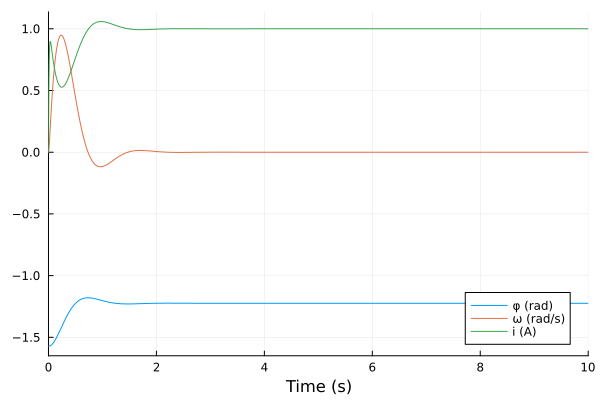
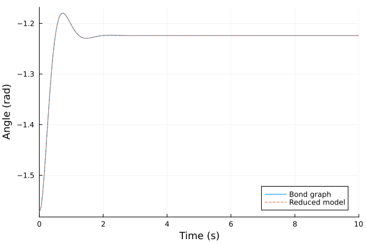
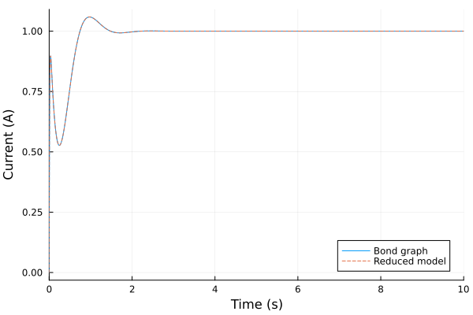
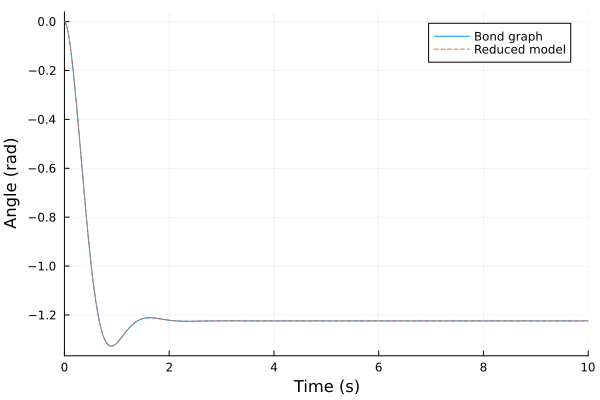
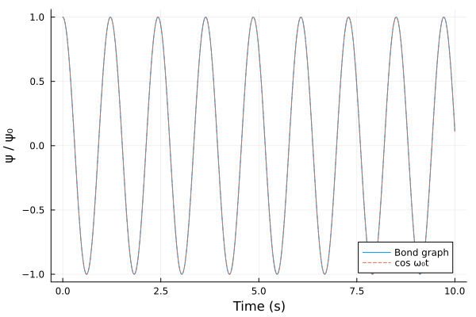

Pendulum Driven by a DC Motor
The source files for all examples can be found in /examples.
Introduction
A DC motor swinging a pendulum is the smallest model of a robot joint: an electrical drive, a rotor, and a link whose geometry changes as it moves. Breedveld uses it to show how a bond graph is built from an iconic diagram and what causality tells the modeller (Breedveld 2011, in Borutzky (ed.), Bond Graph Modelling of Engineering Systems, Springer, §1.3.5, §1.4.4 and §1.5.9, pp. 19–35). The iconic diagram is his Fig. 1.6 (p. 19): a voltage source $u_s$ drives a current through the armature resistance $R_e$ and inductance $L$ into a motor with constant $K_m$; the rotor has inertia $J$ and bearing friction $b$; a rigid massless rod of length $l$ carries a point mass $m$ in gravity $g$.
Motor and pendulum model
As in the DC motor, the magnetic field is constant, so the motor is an ideal transducer with torque $K_m i$ and back EMF $K_m \omega$. The rod is rigid and massless, the mass a point, and the friction viscous. The angle $\varphi$ is measured from the horizontal axis $x$, and gravity acts along $-y$ (Fig. 1.6), so the mass sits at
\[x = l\cos\varphi, \qquad y = l\sin\varphi\]
(Eqs. 1.13–1.14, p. 20) and hangs at rest at $\varphi = -\pi/2$.
Kirchhoff's voltage law around the armature loop gives
\[L\,\dfrac{di}{dt} + R_e\,i = u_s - K_m\,\omega.\]
The rotor and the mass turn together about the pivot, with total inertia $J + m l^2$. Gravity $-mg$ along $y$ acts at the lever arm $x = l\cos\varphi$, a torque $-m g l\cos\varphi$. Newton's 2nd law for the rotation gives
\[(J + m l^2)\,\dot{\omega} + b\,\omega + m g l\cos\varphi = K_m\,i, \qquad \dot{\varphi} = \omega.\]
Breedveld reaches the same model from the bond graph: the two inertias of the point mass add up to $m l^2$ on the rotor (Eqs. 1.22–1.23, p. 34), and gravity becomes a nonlinear compliance with torque $m g l\cos\varphi$ (Eq. 1.25, p. 34; Fig. 1.11b, p. 35). For small angles around $-\pi/2$ this compliance is linear, with parameter $1/(mgl)$, and the undamped pendulum oscillates at
\[f = \dfrac{\omega_0}{2\pi} = \dfrac{1}{2\pi}\sqrt{\dfrac{m g l}{J + m l^2}}\]
(Eq. 1.26, p. 35).
Bond Graph Model
Breedveld's bond graph (Fig. 1.7d, p. 20) keeps the point mass in the plane instead of reducing it by hand. Here is the model built below, drawn by bgplot:
Se:usis the voltage source $u_s$;R:ReandI:Lthe armature resistance $R_e$ and inductance $L$, on the 1-junction of the current $i$;GY:Kmis the motor, a gyrator with modulus $K_m$: $e_1 = K_m f_2$, $e_2 = K_m f_1$ (Breedveld Eqs. 1.6–1.7, p. 15; Karnopp, Margolis & Rosenberg 2012, Eq. 3.11);I:JandR:bare the rotor inertia and the bearing friction, on the 1-junction of the angular velocity $\omega$;TF:mtfxandTF:mtfyare the rigid rod: two transformers modulated by the angle, with moduli $-l\sin\varphi$ and $l\cos\varphi$ (Eq. 1.19, p. 21). With the transformer law $e_1 = n e_2$, $f_2 = n f_1$ (Eqs. 1.4–1.5, p. 15) they give the velocities of the mass, $\dot{x} = (-l\sin\varphi)\,\omega$ and $\dot{y} = (l\cos\varphi)\,\omega$ (Eqs. 1.15–1.16), and the torque of the rod's forces, $T_\varphi = (-l\sin\varphi)\,F_x + (l\cos\varphi)\,F_y$ (Eq. 1.18);I:mxandI:myare the point mass in the two directions, andSe:mgthe weight $-mg$ on the 1-junction of $\dot{y}$.
The angle that modulates the transformers is the integral of $\omega$, a signal: Breedveld draws it as an integrator fed from the $\omega$ junction (Fig. 1.7d). Here a flow detector Df:ω reads $\omega$ and an integrator block outputs $\varphi$. Signals are not drawn by bgplot.
Preliminary Steps
In this example we build the bond graph of Fig. 1.7d and let ModelingToolkit reduce it, then compare it with the reduced pendulum derived above and check the small-angle frequency of Eq. 1.26.
We import the bond-graph toolkit, the integrator block from the MTK standard library, and the solvers: the compiled model keeps algebraic equations (see below), so it needs the DAE-capable Rodas5P, and OrdinaryDiffEqNonlinearSolve for its initial values. Tsit5 solves the reference ODE.
using BondGraphToolkit
using BondGraphToolkit.ModelingToolkit: t_nounits as t, D_nounits as D
import ModelingToolkitStandardLibrary.Blocks as Blocks
using OrdinaryDiffEqTsit5, OrdinaryDiffEqRosenbrock, OrdinaryDiffEqNonlinearSolve
using PlotsSystem Element Definitions
The electrical side: the voltage source, the armature resistance and inductance.
@named us = Se(1.0) # (V) Source voltage uₛ
@named Re = Resistance(R = 1.0) # (Ω) Armature resistance Rₑ
@named L = Inertia(I = 0.01) # (H) Armature inductance L\[ \begin{align} \frac{\mathrm{d}p\left( t \right)}{\mathrm{d}t} &= e\left( t \right) \\ e\left( t \right) &= \mathtt{power.e}\left( t \right) \\ \mathtt{pout.e}\left( t \right) &= \mathtt{power.e}\left( t \right) \\ f\left( t \right) &= - \mathtt{pout.f}\left( t \right) + \mathtt{power.f}\left( t \right) \\ f\left( t \right) &= \frac{p\left( t \right)}{I} \end{align} \]
The motor constant $K_m$, in N⋅m/A = V⋅s/rad, is the gyrator's modulus:
@named Km = GY(r = 0.5)\[ \begin{align} \mathtt{p1.e}\left( t \right) &= - \mathtt{p2.f}\left( t \right) ~ r \\ \mathtt{p2.e}\left( t \right) &= \mathtt{p1.f}\left( t \right) ~ r \end{align} \]
The rotor: its inertia and the bearing friction.
@named J = Inertia(I = 0.01) # (kg⋅m²) Rotor inertia J
@named b = Resistance(R = 0.05) # (N⋅m⋅s/rad) Bearing friction b\[ \begin{align} e\left( t \right) &= \mathtt{power.e}\left( t \right) \\ \mathtt{pout.e}\left( t \right) &= \mathtt{power.e}\left( t \right) \\ f\left( t \right) &= - \mathtt{pout.f}\left( t \right) + \mathtt{power.f}\left( t \right) \\ e\left( t \right) &= R ~ f\left( t \right) \end{align} \]
The pendulum's mass, rod length and gravity:
m = 0.5 # (kg) Point mass m
l = 0.3 # (m) Rod length l
g = 9.81 # (m/s²) Gravitational acceleration g9.81The point mass is one inertia per direction. Its momenta are fixed by the rotor speed through the rigid rod, so they are not independent states: in bond-graph terms they are in derivative causality (below). Two things follow.
- They get no initial value, or the model's initialisation is over-determined. With the library's element that is
Inertia(I = m, p = nothing). - ModelingToolkit must not keep one of their momenta as a state. Left to itself, it keeps $p_x$ and recovers $\omega$ from $p_x = -m l\sin\varphi\,\omega$, which has no solution for $\omega$ where $\sin\varphi = 0$, the rod horizontal: started there, the pendulum stays frozen while the solver reports success. A low
state_priorityon the momenta steers ModelingToolkit to the rotor's momentum instead.
Inertia has no option for that, so the point mass is a small custom element, the library's inertia law with that metadata on its momentum (see One-Port Elements):
@oneport function PointInertia(; name, I)
@parameters I = I
@variables p(t) [state_priority = -10] # no initial value
[D(p) ~ e, f ~ p / I]
end
@named mx = PointInertia(I = m) # (kg) Point mass, x direction
@named my = PointInertia(I = m) # (kg) Point mass, y direction\[ \begin{align} \frac{\mathrm{d}p\left( t \right)}{\mathrm{d}t} &= e\left( t \right) \\ e\left( t \right) &= \mathtt{power.e}\left( t \right) \\ \mathtt{pout.e}\left( t \right) &= \mathtt{power.e}\left( t \right) \\ f\left( t \right) &= - \mathtt{pout.f}\left( t \right) + \mathtt{power.f}\left( t \right) \\ f\left( t \right) &= \frac{p\left( t \right)}{I} \end{align} \]
Gravity is a constant force $-mg$ along $y$ (Fig. 1.7d labels it Se: −mg):
@named mg = Se(-m * g) # (N) Weight\[ \begin{align} e\left( t \right) &= \mathtt{power.e}\left( t \right) \\ \mathtt{pout.e}\left( t \right) &= \mathtt{power.e}\left( t \right) \\ f\left( t \right) &= - \mathtt{pout.f}\left( t \right) + \mathtt{power.f}\left( t \right) \\ e\left( t \right) &= -4.905 \end{align} \]
The angle: a flow detector reads $\omega$ on its 1-junction, and an integrator turns it into $\varphi$. Its initial value is the starting angle, the pendulum hanging at rest:
@named ω = Df()
@named φ = Blocks.Integrator(x = -π / 2)\[ \begin{align} u\left( t \right) &= \mathtt{input.u}\left( t \right) \\ y\left( t \right) &= \mathtt{output.u}\left( t \right) \\ \frac{\mathrm{d}x\left( t \right)}{\mathrm{d}t} &= k ~ u\left( t \right) \\ y\left( t \right) &= x\left( t \right) \end{align} \]
The rod's two transformers read the integrator's output in their moduli, so they are built with @named (see Transformers and Gyrators):
@named mtfx = TF(m = -l * sin(φ.output.u))
@named mtfy = TF(m = l * cos(φ.output.u))\[ \begin{align} \mathtt{p1.e}\left( t \right) &= 0.3 ~ \cos\left( \mathtt{\varphi.output.u}\left( t \right) \right) ~ \mathtt{p2.e}\left( t \right) \\ - \mathtt{p2.f}\left( t \right) &= 0.3 ~ \cos\left( \mathtt{\varphi.output.u}\left( t \right) \right) ~ \mathtt{p1.f}\left( t \right) \end{align} \]
Model Construction
The bonds follow Fig. 1.7d. The source's bond points into the current junction and the bonds of $R_e$ and $L$ out of it, into the elements, as in the DC motor; the bond to the motor leaves the junction (:gy):
@named ji = Junction1(us => :pout, Re, L, :gy)\[ \begin{align} 0 &= \mathrm{connect}\left( us_{+}pout, core_{+}p1 \right) \\ 0 &= \mathrm{connect}\left( Re_{+}power, core_{+}p2 \right) \\ 0 &= \mathrm{connect}\left( L_{+}power, core_{+}p3 \right) \\ 0 &= \mathrm{connect}\left( gy, core_{+}p4 \right) \\ - \mathtt{core.p2.f}\left( t \right) &= \mathtt{core.p1.f}\left( t \right) \\ - \mathtt{core.p3.f}\left( t \right) &= \mathtt{core.p1.f}\left( t \right) \\ - \mathtt{core.p4.f}\left( t \right) &= \mathtt{core.p1.f}\left( t \right) \\ 0 &= \mathtt{core.p1.e}\left( t \right) - \mathtt{core.p2.e}\left( t \right) - \mathtt{core.p3.e}\left( t \right) - \mathtt{core.p4.e}\left( t \right) \\ \mathtt{us.e}\left( t \right) &= \mathtt{us.power.e}\left( t \right) \\ \mathtt{us.pout.e}\left( t \right) &= \mathtt{us.power.e}\left( t \right) \\ \mathtt{us.f}\left( t \right) &= - \mathtt{us.pout.f}\left( t \right) + \mathtt{us.power.f}\left( t \right) \\ \mathtt{us.e}\left( t \right) &= 1 \\ \mathtt{Re.e}\left( t \right) &= \mathtt{Re.power.e}\left( t \right) \\ \mathtt{Re.pout.e}\left( t \right) &= \mathtt{Re.power.e}\left( t \right) \\ \mathtt{Re.f}\left( t \right) &= - \mathtt{Re.pout.f}\left( t \right) + \mathtt{Re.power.f}\left( t \right) \\ \mathtt{Re.e}\left( t \right) &= \mathtt{Re.R} ~ \mathtt{Re.f}\left( t \right) \\ \frac{\mathrm{d}\mathtt{L.p}\left( t \right)}{\mathrm{d}t} &= \mathtt{L.e}\left( t \right) \\ \mathtt{L.e}\left( t \right) &= \mathtt{L.power.e}\left( t \right) \\ \mathtt{L.pout.e}\left( t \right) &= \mathtt{L.power.e}\left( t \right) \\ \mathtt{L.f}\left( t \right) &= - \mathtt{L.pout.f}\left( t \right) + \mathtt{L.power.f}\left( t \right) \\ \mathtt{L.f}\left( t \right) &= \frac{\mathtt{L.p}\left( t \right)}{\mathtt{L.I}} \end{align} \]
The motor's bond enters the $\omega$ junction (:gy => :in); the bonds of $J$, $b$ and the detector point out of it, and so do the two bonds to the rod's transformers (:x, :y): power flows from the motor to the mass.
@named jω = Junction1(:gy => :in, J, b, ω, :x, :y)\[ \begin{align} 0 &= \mathrm{connect}\left( gy, core_{+}p1 \right) \\ 0 &= \mathrm{connect}\left( J_{+}power, core_{+}p2 \right) \\ 0 &= \mathrm{connect}\left( b_{+}power, core_{+}p3 \right) \\ 0 &= \mathrm{connect}\left( \omega_{+}power, core_{+}p4 \right) \\ 0 &= \mathrm{connect}\left( x, core_{+}p5 \right) \\ 0 &= \mathrm{connect}\left( y, core_{+}p6 \right) \\ - \mathtt{core.p2.f}\left( t \right) &= \mathtt{core.p1.f}\left( t \right) \\ - \mathtt{core.p3.f}\left( t \right) &= \mathtt{core.p1.f}\left( t \right) \\ - \mathtt{core.p4.f}\left( t \right) &= \mathtt{core.p1.f}\left( t \right) \\ - \mathtt{core.p5.f}\left( t \right) &= \mathtt{core.p1.f}\left( t \right) \\ - \mathtt{core.p6.f}\left( t \right) &= \mathtt{core.p1.f}\left( t \right) \\ 0 &= \mathtt{core.p1.e}\left( t \right) - \mathtt{core.p2.e}\left( t \right) - \mathtt{core.p3.e}\left( t \right) - \mathtt{core.p4.e}\left( t \right) - \mathtt{core.p5.e}\left( t \right) - \mathtt{core.p6.e}\left( t \right) \\ \frac{\mathrm{d}\mathtt{J.p}\left( t \right)}{\mathrm{d}t} &= \mathtt{J.e}\left( t \right) \\ \mathtt{J.e}\left( t \right) &= \mathtt{J.power.e}\left( t \right) \\ \mathtt{J.pout.e}\left( t \right) &= \mathtt{J.power.e}\left( t \right) \\ \mathtt{J.f}\left( t \right) &= - \mathtt{J.pout.f}\left( t \right) + \mathtt{J.power.f}\left( t \right) \\ \mathtt{J.f}\left( t \right) &= \frac{\mathtt{J.p}\left( t \right)}{\mathtt{J.I}} \\ \mathtt{b.e}\left( t \right) &= \mathtt{b.power.e}\left( t \right) \\ \mathtt{b.pout.e}\left( t \right) &= \mathtt{b.power.e}\left( t \right) \\ \mathtt{b.f}\left( t \right) &= - \mathtt{b.pout.f}\left( t \right) + \mathtt{b.power.f}\left( t \right) \\ \mathtt{b.e}\left( t \right) &= \mathtt{b.R} ~ \mathtt{b.f}\left( t \right) \\ \mathtt{\omega.e}\left( t \right) &= \mathtt{\omega.power.e}\left( t \right) \\ \mathtt{\omega.pout.e}\left( t \right) &= \mathtt{\omega.power.e}\left( t \right) \\ \mathtt{\omega.f}\left( t \right) &= - \mathtt{\omega.pout.f}\left( t \right) + \mathtt{\omega.power.f}\left( t \right) \\ \mathtt{\omega.e}\left( t \right) &= 0 \\ \mathtt{\omega.output.u}\left( t \right) &= \mathtt{\omega.f}\left( t \right) \end{align} \]
The $y$ transformer's bond enters the junction of $\dot{y}$ (:tf => :in), and so does the weight's (mg => :pout); the bond of my points out of it. In the $x$ direction there is nothing else on the velocity $\dot{x}$, so Breedveld bonds the transformer straight into mx (Fig. 1.7d), as here.
@named jy = Junction1(:tf => :in, mg => :pout, my)\[ \begin{align} 0 &= \mathrm{connect}\left( tf, core_{+}p1 \right) \\ 0 &= \mathrm{connect}\left( mg_{+}pout, core_{+}p2 \right) \\ 0 &= \mathrm{connect}\left( my_{+}power, core_{+}p3 \right) \\ \mathtt{core.p2.f}\left( t \right) &= \mathtt{core.p1.f}\left( t \right) \\ - \mathtt{core.p3.f}\left( t \right) &= \mathtt{core.p1.f}\left( t \right) \\ 0 &= \mathtt{core.p1.e}\left( t \right) + \mathtt{core.p2.e}\left( t \right) - \mathtt{core.p3.e}\left( t \right) \\ \mathtt{mg.e}\left( t \right) &= \mathtt{mg.power.e}\left( t \right) \\ \mathtt{mg.pout.e}\left( t \right) &= \mathtt{mg.power.e}\left( t \right) \\ \mathtt{mg.f}\left( t \right) &= - \mathtt{mg.pout.f}\left( t \right) + \mathtt{mg.power.f}\left( t \right) \\ \mathtt{mg.e}\left( t \right) &= -4.905 \\ \frac{\mathrm{d}\mathtt{my.p}\left( t \right)}{\mathrm{d}t} &= \mathtt{my.e}\left( t \right) \\ \mathtt{my.e}\left( t \right) &= \mathtt{my.power.e}\left( t \right) \\ \mathtt{my.pout.e}\left( t \right) &= \mathtt{my.power.e}\left( t \right) \\ \mathtt{my.f}\left( t \right) &= - \mathtt{my.pout.f}\left( t \right) + \mathtt{my.power.f}\left( t \right) \\ \mathtt{my.f}\left( t \right) &= \frac{\mathtt{my.p}\left( t \right)}{\mathtt{my.I}} \end{align} \]
Each transformer's port 1 is the bond into it and port 2 the bond out of it. The last connect is the signal from the detector to the integrator.
@named model = System([connect(ji.gy, Km.p1), connect(Km.p2, jω.gy),
connect(jω.x, mtfx.p1), connect(mtfx.p2, mx.power),
connect(jω.y, mtfy.p1), connect(mtfy.p2, jy.tf),
connect(jω.ω.output, φ.input)], t;
systems = [ji, Km, jω, mtfx, mx, mtfy, jy, φ])\[ \begin{align} 0 &= \mathrm{connect}\left( ji_{+}gy, Km_{+}p1 \right) \\ 0 &= \mathrm{connect}\left( Km_{+}p2, j\omega_{+}gy \right) \\ 0 &= \mathrm{connect}\left( j\omega_{+}x, mtfx_{+}p1 \right) \\ 0 &= \mathrm{connect}\left( mtfx_{+}p2, mx_{+}power \right) \\ 0 &= \mathrm{connect}\left( j\omega_{+}y, mtfy_{+}p1 \right) \\ 0 &= \mathrm{connect}\left( mtfy_{+}p2, jy_{+}tf \right) \\ 0 &= \mathrm{connect}\left( j\omega_+\omega_{+}output, \varphi_{+}input \right) \\ 0 &= \mathrm{connect}\left( us_{+}pout, core_{+}p1 \right) \\ 0 &= \mathrm{connect}\left( Re_{+}power, core_{+}p2 \right) \\ 0 &= \mathrm{connect}\left( L_{+}power, core_{+}p3 \right) \\ 0 &= \mathrm{connect}\left( gy, core_{+}p4 \right) \\ - \mathtt{ji.core.p2.f}\left( t \right) &= \mathtt{ji.core.p1.f}\left( t \right) \\ - \mathtt{ji.core.p3.f}\left( t \right) &= \mathtt{ji.core.p1.f}\left( t \right) \\ - \mathtt{ji.core.p4.f}\left( t \right) &= \mathtt{ji.core.p1.f}\left( t \right) \\ 0 &= \mathtt{ji.core.p1.e}\left( t \right) - \mathtt{ji.core.p2.e}\left( t \right) - \mathtt{ji.core.p3.e}\left( t \right) - \mathtt{ji.core.p4.e}\left( t \right) \\ \mathtt{ji.us.e}\left( t \right) &= \mathtt{ji.us.power.e}\left( t \right) \\ \mathtt{ji.us.pout.e}\left( t \right) &= \mathtt{ji.us.power.e}\left( t \right) \\ \mathtt{ji.us.f}\left( t \right) &= - \mathtt{ji.us.pout.f}\left( t \right) + \mathtt{ji.us.power.f}\left( t \right) \\ \mathtt{ji.us.e}\left( t \right) &= 1 \\ \mathtt{ji.Re.e}\left( t \right) &= \mathtt{ji.Re.power.e}\left( t \right) \\ \mathtt{ji.Re.pout.e}\left( t \right) &= \mathtt{ji.Re.power.e}\left( t \right) \\ \mathtt{ji.Re.f}\left( t \right) &= - \mathtt{ji.Re.pout.f}\left( t \right) + \mathtt{ji.Re.power.f}\left( t \right) \\ \mathtt{ji.Re.e}\left( t \right) &= \mathtt{ji.Re.R} ~ \mathtt{ji.Re.f}\left( t \right) \\ \frac{\mathrm{d}\mathtt{ji.L.p}\left( t \right)}{\mathrm{d}t} &= \mathtt{ji.L.e}\left( t \right) \\ \mathtt{ji.L.e}\left( t \right) &= \mathtt{ji.L.power.e}\left( t \right) \\ \mathtt{ji.L.pout.e}\left( t \right) &= \mathtt{ji.L.power.e}\left( t \right) \\ \mathtt{ji.L.f}\left( t \right) &= - \mathtt{ji.L.pout.f}\left( t \right) + \mathtt{ji.L.power.f}\left( t \right) \\ \mathtt{ji.L.f}\left( t \right) &= \frac{\mathtt{ji.L.p}\left( t \right)}{\mathtt{ji.L.I}} \\ \mathtt{Km.p1.e}\left( t \right) &= - \mathtt{Km.p2.f}\left( t \right) ~ \mathtt{Km.r} \\ \mathtt{Km.p2.e}\left( t \right) &= \mathtt{Km.p1.f}\left( t \right) ~ \mathtt{Km.r} \\ 0 &= \mathrm{connect}\left( gy, core_{+}p1 \right) \\ 0 &= \mathrm{connect}\left( J_{+}power, core_{+}p2 \right) \\ 0 &= \mathrm{connect}\left( b_{+}power, core_{+}p3 \right) \\ 0 &= \mathrm{connect}\left( \omega_{+}power, core_{+}p4 \right) \\ 0 &= \mathrm{connect}\left( x, core_{+}p5 \right) \\ 0 &= \mathrm{connect}\left( y, core_{+}p6 \right) \\ - \mathtt{j\omega.core.p2.f}\left( t \right) &= \mathtt{j\omega.core.p1.f}\left( t \right) \\ - \mathtt{j\omega.core.p3.f}\left( t \right) &= \mathtt{j\omega.core.p1.f}\left( t \right) \\ - \mathtt{j\omega.core.p4.f}\left( t \right) &= \mathtt{j\omega.core.p1.f}\left( t \right) \\ - \mathtt{j\omega.core.p5.f}\left( t \right) &= \mathtt{j\omega.core.p1.f}\left( t \right) \\ - \mathtt{j\omega.core.p6.f}\left( t \right) &= \mathtt{j\omega.core.p1.f}\left( t \right) \\ 0 &= \mathtt{j\omega.core.p1.e}\left( t \right) - \mathtt{j\omega.core.p2.e}\left( t \right) - \mathtt{j\omega.core.p3.e}\left( t \right) - \mathtt{j\omega.core.p4.e}\left( t \right) - \mathtt{j\omega.core.p5.e}\left( t \right) - \mathtt{j\omega.core.p6.e}\left( t \right) \\ \frac{\mathrm{d}\mathtt{j\omega.J.p}\left( t \right)}{\mathrm{d}t} &= \mathtt{j\omega.J.e}\left( t \right) \\ \mathtt{j\omega.J.e}\left( t \right) &= \mathtt{j\omega.J.power.e}\left( t \right) \\ \mathtt{j\omega.J.pout.e}\left( t \right) &= \mathtt{j\omega.J.power.e}\left( t \right) \\ \mathtt{j\omega.J.f}\left( t \right) &= - \mathtt{j\omega.J.pout.f}\left( t \right) + \mathtt{j\omega.J.power.f}\left( t \right) \\ \mathtt{j\omega.J.f}\left( t \right) &= \frac{\mathtt{j\omega.J.p}\left( t \right)}{\mathtt{j\omega.J.I}} \\ \mathtt{j\omega.b.e}\left( t \right) &= \mathtt{j\omega.b.power.e}\left( t \right) \\ \mathtt{j\omega.b.pout.e}\left( t \right) &= \mathtt{j\omega.b.power.e}\left( t \right) \\ \mathtt{j\omega.b.f}\left( t \right) &= - \mathtt{j\omega.b.pout.f}\left( t \right) + \mathtt{j\omega.b.power.f}\left( t \right) \\ \mathtt{j\omega.b.e}\left( t \right) &= \mathtt{j\omega.b.R} ~ \mathtt{j\omega.b.f}\left( t \right) \\ \mathtt{j\omega.\omega.e}\left( t \right) &= \mathtt{j\omega.\omega.power.e}\left( t \right) \\ \mathtt{j\omega.\omega.pout.e}\left( t \right) &= \mathtt{j\omega.\omega.power.e}\left( t \right) \\ \mathtt{j\omega.\omega.f}\left( t \right) &= - \mathtt{j\omega.\omega.pout.f}\left( t \right) + \mathtt{j\omega.\omega.power.f}\left( t \right) \\ \mathtt{j\omega.\omega.e}\left( t \right) &= 0 \\ \mathtt{j\omega.\omega.output.u}\left( t \right) &= \mathtt{j\omega.\omega.f}\left( t \right) \\ \mathtt{mtfx.p1.e}\left( t \right) &= - 0.3 ~ \mathtt{mtfx.p2.e}\left( t \right) ~ \sin\left( \mathtt{\varphi.output.u}\left( t \right) \right) \\ - \mathtt{mtfx.p2.f}\left( t \right) &= - 0.3 ~ \mathtt{mtfx.p1.f}\left( t \right) ~ \sin\left( \mathtt{\varphi.output.u}\left( t \right) \right) \\ \frac{\mathrm{d}\mathtt{mx.p}\left( t \right)}{\mathrm{d}t} &= \mathtt{mx.e}\left( t \right) \\ \mathtt{mx.e}\left( t \right) &= \mathtt{mx.power.e}\left( t \right) \\ \mathtt{mx.pout.e}\left( t \right) &= \mathtt{mx.power.e}\left( t \right) \\ \mathtt{mx.f}\left( t \right) &= - \mathtt{mx.pout.f}\left( t \right) + \mathtt{mx.power.f}\left( t \right) \\ \mathtt{mx.f}\left( t \right) &= \frac{\mathtt{mx.p}\left( t \right)}{\mathtt{mx.I}} \\ \mathtt{mtfy.p1.e}\left( t \right) &= 0.3 ~ \cos\left( \mathtt{\varphi.output.u}\left( t \right) \right) ~ \mathtt{mtfy.p2.e}\left( t \right) \\ - \mathtt{mtfy.p2.f}\left( t \right) &= 0.3 ~ \cos\left( \mathtt{\varphi.output.u}\left( t \right) \right) ~ \mathtt{mtfy.p1.f}\left( t \right) \\ 0 &= \mathrm{connect}\left( tf, core_{+}p1 \right) \\ 0 &= \mathrm{connect}\left( mg_{+}pout, core_{+}p2 \right) \\ 0 &= \mathrm{connect}\left( my_{+}power, core_{+}p3 \right) \\ \mathtt{jy.core.p2.f}\left( t \right) &= \mathtt{jy.core.p1.f}\left( t \right) \\ - \mathtt{jy.core.p3.f}\left( t \right) &= \mathtt{jy.core.p1.f}\left( t \right) \\ 0 &= \mathtt{jy.core.p1.e}\left( t \right) + \mathtt{jy.core.p2.e}\left( t \right) - \mathtt{jy.core.p3.e}\left( t \right) \\ \mathtt{jy.mg.e}\left( t \right) &= \mathtt{jy.mg.power.e}\left( t \right) \\ \mathtt{jy.mg.pout.e}\left( t \right) &= \mathtt{jy.mg.power.e}\left( t \right) \\ \mathtt{jy.mg.f}\left( t \right) &= - \mathtt{jy.mg.pout.f}\left( t \right) + \mathtt{jy.mg.power.f}\left( t \right) \\ \mathtt{jy.mg.e}\left( t \right) &= -4.905 \\ \frac{\mathrm{d}\mathtt{jy.my.p}\left( t \right)}{\mathrm{d}t} &= \mathtt{jy.my.e}\left( t \right) \\ \mathtt{jy.my.e}\left( t \right) &= \mathtt{jy.my.power.e}\left( t \right) \\ \mathtt{jy.my.pout.e}\left( t \right) &= \mathtt{jy.my.power.e}\left( t \right) \\ \mathtt{jy.my.f}\left( t \right) &= - \mathtt{jy.my.pout.f}\left( t \right) + \mathtt{jy.my.power.f}\left( t \right) \\ \mathtt{jy.my.f}\left( t \right) &= \frac{\mathtt{jy.my.p}\left( t \right)}{\mathtt{jy.my.I}} \\ \mathtt{\varphi.u}\left( t \right) &= \mathtt{\varphi.input.u}\left( t \right) \\ \mathtt{\varphi.y}\left( t \right) &= \mathtt{\varphi.output.u}\left( t \right) \\ \frac{\mathrm{d}\mathtt{\varphi.x}\left( t \right)}{\mathrm{d}t} &= \mathtt{\varphi.k} ~ \mathtt{\varphi.u}\left( t \right) \\ \mathtt{\varphi.y}\left( t \right) &= \mathtt{\varphi.x}\left( t \right) \end{align} \]
The bond graph, drawn by the library:
bgplot(model)
-->
<!-- Title: BondGraph Pages: 1 -->
<svg width="752pt" height="202pt"
viewBox="0.00 0.00 752.00 202.00" xmlns="http://www.w3.org/2000/svg" xmlns:xlink="http://www.w3.org/1999/xlink">
<g id="graph0" class="graph" transform="scale(1 1) rotate(0) translate(4 198)">
<title>BondGraph</title>
<polygon fill="white" stroke="none" points="-4,4 -4,-198 747.75,-198 747.75,4 -4,4"/>
<!-- ji -->
<g id="node1" class="node">
<title>ji</title>
<text xml:space="preserve" text-anchor="middle" x="125" y="-92.33" font-family="Times,serif" font-size="14.00">1</text>
</g>
<!-- ji₊L -->
<g id="node4" class="node">
<title>ji₊L</title>
<text xml:space="preserve" text-anchor="middle" x="125" y="-13.32" font-family="Times,serif" font-size="14.00">I:L</text>
</g>
<!-- ji&%2345;>ji₊L -->
<g id="edge3" class="edge">
<title>ji&%2345;>ji₊L</title>
<path fill="none" stroke="black" d="M125,-79.34C125,-68.25 125,-57.17 125,-46.08"/>
<polygon fill="black" stroke="black" points="125,-36.1 129.5,-46.1 125,-40.9 125,-46.1 125,-46.1 125,-36.1"/>
</g>
<!-- Km -->
<g id="node5" class="node">
<title>Km</title>
<text xml:space="preserve" text-anchor="middle" x="226.62" y="-92.33" font-family="Times,serif" font-size="14.00">GY:Km</text>
</g>
<!-- ji&%2345;>Km -->
<g id="edge9" class="edge">
<title>ji&%2345;>Km</title>
<path fill="none" stroke="black" d="M151.92,-97C162.07,-97 173.96,-97 185.18,-97"/>
<polygon fill="black" stroke="black" points="195.04,-97 185.04,-101.5 190.24,-97 185.04,-97 185.04,-97 195.04,-97"/>
</g>
<!-- ji₊us -->
<g id="node2" class="node">
<title>ji₊us</title>
<text xml:space="preserve" text-anchor="middle" x="27.5" y="-92.33" font-family="Times,serif" font-size="14.00">Se:us</text>
</g>
<!-- ji₊us&%2345;>ji -->
<g id="edge1" class="edge">
<title>ji₊us&%2345;>ji</title>
<path fill="none" stroke="black" d="M54.85,-97C65.06,-97 76.91,-97 87.89,-97"/>
<polygon fill="black" stroke="black" points="97.86,-97 87.86,-101.5 93.07,-97 87.86,-97 87.86,-97 97.86,-97"/>
</g>
<!-- ji₊Re -->
<g id="node3" class="node">
<title>ji₊Re</title>
<text xml:space="preserve" text-anchor="middle" x="125" y="-171.32" font-family="Times,serif" font-size="14.00">R:Re</text>
</g>
<!-- ji₊Re&%2345;>ji -->
<g id="edge2" class="edge">
<title>ji₊Re&%2345;>ji</title>
<path fill="none" stroke="black" d="M125,-148.16C125,-137.07 125,-125.98 125,-114.9"/>
<polygon fill="black" stroke="black" points="125,-158.13 120.5,-148.13 125,-153.34 125,-148.13 125,-148.13 125,-158.13"/>
</g>
<!-- jω -->
<g id="node6" class="node">
<title>jω</title>
<text xml:space="preserve" text-anchor="middle" x="328.25" y="-92.33" font-family="Times,serif" font-size="14.00">1</text>
</g>
<!-- Km&%2345;>jω -->
<g id="edge10" class="edge">
<title>Km&%2345;>jω</title>
<path fill="none" stroke="black" d="M258.06,-97C268.55,-97 280.4,-97 291.3,-97"/>
<polygon fill="black" stroke="black" points="301.17,-97 291.17,-101.5 296.37,-97 291.17,-97 291.17,-97 301.17,-97"/>
</g>
<!-- jω₊b -->
<g id="node8" class="node">
<title>jω₊b</title>
<text xml:space="preserve" text-anchor="middle" x="328.25" y="-13.32" font-family="Times,serif" font-size="14.00">R:b</text>
</g>
<!-- jω&%2345;>jω₊b -->
<g id="edge5" class="edge">
<title>jω&%2345;>jω₊b</title>
<path fill="none" stroke="black" d="M328.25,-79.34C328.25,-68.25 328.25,-57.17 328.25,-46.08"/>
<polygon fill="black" stroke="black" points="328.25,-36.1 332.75,-46.1 328.25,-40.9 328.25,-46.1 328.25,-46.1 328.25,-36.1"/>
</g>
<!-- jω₊ω -->
<g id="node9" class="node">
<title>jω₊ω</title>
<text xml:space="preserve" text-anchor="middle" x="434" y="-171.32" font-family="Times,serif" font-size="14.00">Df:ω</text>
</g>
<!-- jω&%2345;>jω₊ω -->
<g id="edge6" class="edge">
<title>jω&%2345;>jω₊ω</title>
<path fill="none" stroke="black" d="M352.79,-114.93C367.25,-125.94 385.95,-140.17 401.65,-152.13"/>
<polygon fill="black" stroke="black" points="409.39,-158.02 398.71,-155.54 405.57,-155.12 401.43,-151.96 401.43,-151.96 409.39,-158.02"/>
</g>
<!-- mtfx -->
<g id="node10" class="node">
<title>mtfx</title>
<text xml:space="preserve" text-anchor="middle" x="434" y="-92.33" font-family="Times,serif" font-size="14.00">TF:mtfx</text>
</g>
<!-- jω&%2345;>mtfx -->
<g id="edge11" class="edge">
<title>jω&%2345;>mtfx</title>
<path fill="none" stroke="black" d="M355.16,-97C365.18,-97 376.94,-97 388.24,-97"/>
<polygon fill="black" stroke="black" points="398.22,-97 388.22,-101.5 393.42,-97 388.22,-97 388.22,-97 398.22,-97"/>
</g>
<!-- mtfy -->
<g id="node12" class="node">
<title>mtfy</title>
<text xml:space="preserve" text-anchor="middle" x="434" y="-13.32" font-family="Times,serif" font-size="14.00">TF:mtfy</text>
</g>
<!-- jω&%2345;>mtfy -->
<g id="edge13" class="edge">
<title>jω&%2345;>mtfy</title>
<path fill="none" stroke="black" d="M352.79,-79.07C367.25,-68.06 385.95,-53.83 401.65,-41.87"/>
<polygon fill="black" stroke="black" points="409.39,-35.98 404.16,-45.62 405.57,-38.88 401.43,-42.04 401.43,-42.04 409.39,-35.98"/>
</g>
<!-- jω₊J -->
<g id="node7" class="node">
<title>jω₊J</title>
<text xml:space="preserve" text-anchor="middle" x="328.25" y="-171.32" font-family="Times,serif" font-size="14.00">I:J</text>
</g>
<!-- jω₊J&%2345;>jω -->
<g id="edge4" class="edge">
<title>jω₊J&%2345;>jω</title>
<path fill="none" stroke="black" d="M328.25,-148.16C328.25,-137.07 328.25,-125.98 328.25,-114.9"/>
<polygon fill="black" stroke="black" points="328.25,-158.13 323.75,-148.13 328.25,-153.34 328.25,-148.13 328.25,-148.13 328.25,-158.13"/>
</g>
<!-- mx -->
<g id="node11" class="node">
<title>mx</title>
<text xml:space="preserve" text-anchor="middle" x="576.25" y="-92.33" font-family="Times,serif" font-size="14.00">PointInertia:mx</text>
</g>
<!-- mtfx&%2345;>mx -->
<g id="edge12" class="edge">
<title>mtfx&%2345;>mx</title>
<path fill="none" stroke="black" d="M469.67,-97C479.77,-97 491.2,-97 502.72,-97"/>
<polygon fill="black" stroke="black" points="512.63,-97 502.63,-101.5 507.84,-97 502.63,-97 502.63,-97 512.63,-97"/>
</g>
<!-- jy -->
<g id="node13" class="node">
<title>jy</title>
<text xml:space="preserve" text-anchor="middle" x="576.25" y="-13.32" font-family="Times,serif" font-size="14.00">1</text>
</g>
<!-- mtfy&%2345;>jy -->
<g id="edge14" class="edge">
<title>mtfy&%2345;>jy</title>
<path fill="none" stroke="black" d="M469.67,-18C490.86,-18 517.91,-18 539.33,-18"/>
<polygon fill="black" stroke="black" points="549.14,-18 539.14,-22.5 544.34,-18 539.14,-18 539.14,-18 549.14,-18"/>
</g>
<!-- jy₊mg -->
<g id="node14" class="node">
<title>jy₊mg</title>
<text xml:space="preserve" text-anchor="middle" x="713.25" y="-13.32" font-family="Times,serif" font-size="14.00">Se:mg</text>
</g>
<!-- jy&%2345;>jy₊mg -->
<g id="edge7" class="edge">
<title>jy&%2345;>jy₊mg</title>
<path fill="none" stroke="black" d="M613.14,-18C634.93,-18 662.39,-18 682.88,-18"/>
<polygon fill="black" stroke="black" points="603.17,-18 613.17,-13.5 607.96,-18 613.17,-18 613.17,-18 603.17,-18"/>
</g>
<!-- jy₊my -->
<g id="node15" class="node">
<title>jy₊my</title>
<text xml:space="preserve" text-anchor="middle" x="576.25" y="-171.32" font-family="Times,serif" font-size="14.00">PointInertia:my</text>
</g>
<!-- jy₊my&%2345;>jy -->
<g id="edge8" class="edge">
<title>jy₊my&%2345;>jy</title>
<path fill="none" stroke="black" d="M576.25,-148.18C576.25,-110.75 576.25,-73.33 576.25,-35.9"/>
<polygon fill="black" stroke="black" points="576.25,-158.01 571.75,-148.01 576.25,-153.21 576.25,-148.01 576.25,-148.01 576.25,-158.01"/>
</g>
</g>
</svg>
)
Analysing the model
Breedveld's causality assignment leaves both inertias of the point mass in derivative causality (Fig. 1.8, p. 26): the rigid rod fixes their velocities by the rotor's, so the three inertias are not independent (§1.5.9, p. 33). The library assigns no causality; mtkcompile finds the same dependency and reduces the index of the model.
sys = mtkcompile(model)\[ \begin{align} \frac{\mathrm{d}\mathtt{\varphi.output.u}\left( t \right)}{\mathrm{d}t} &= \mathtt{j\omega.J.f}\left( t \right) ~ \mathtt{\varphi.k} \\ \frac{\mathrm{d}\mathtt{j\omega.J.p}\left( t \right)}{\mathrm{d}t} &= \mathtt{j\omega.J.I} ~ \mathtt{j\omega.J.fˍt}\left( t \right) \\ \frac{\mathrm{d}\mathtt{ji.L.p}\left( t \right)}{\mathrm{d}t} &= \mathtt{ji.L.e}\left( t \right) \\ 0 &= - \mathtt{j\omega.core.p5.e}\left( t \right) - 0.3 ~ \mathtt{mtfx.p2.e}\left( t \right) ~ \sin\left( \mathtt{\varphi.output.u}\left( t \right) \right) \\ 0 &= - \mathtt{jy.core.p1.fˍt}\left( t \right) + 0.3 ~ \cos\left( \mathtt{\varphi.output.u}\left( t \right) \right) ~ \mathtt{j\omega.J.fˍt}\left( t \right) - 0.3 ~ \left( \mathtt{j\omega.J.f}\left( t \right) \right)^{2} ~ \sin\left( \mathtt{\varphi.output.u}\left( t \right) \right) ~ \mathtt{\varphi.k} \end{align} \]
Print system states
unknowns(sys)5-element Vector{SymbolicUtils.BasicSymbolicImpl.var"typeof(BasicSymbolicImpl)"{SymReal}}:
φ₊output₊u(t)
jω₊J₊p(t)
ji₊L₊p(t)
jy₊core₊p1₊e(t)
jω₊J₊fˍt(t)Print system parameters
parameters(sys)10-element Vector{SymbolicUtils.BasicSymbolicImpl.var"typeof(BasicSymbolicImpl)"{SymReal}}:
ji₊Re₊R
ji₊L₊I
Km₊r
jω₊J₊I
jω₊b₊R
mx₊I
jy₊my₊I
φ₊u_start
φ₊y_start
φ₊kPrint the system's equations in terms of the states
full_equations(sys)\[ \begin{align} \frac{\mathrm{d}\mathtt{\varphi.output.u}\left( t \right)}{\mathrm{d}t} &= \frac{\mathtt{j\omega.J.p}\left( t \right) ~ \mathtt{\varphi.k}}{\mathtt{j\omega.J.I}} \\ \frac{\mathrm{d}\mathtt{j\omega.J.p}\left( t \right)}{\mathrm{d}t} &= \mathtt{j\omega.J.I} ~ \mathtt{j\omega.J.fˍt}\left( t \right) \\ \frac{\mathrm{d}\mathtt{ji.L.p}\left( t \right)}{\mathrm{d}t} &= 1 + \frac{ - \mathtt{Km.r} ~ \mathtt{j\omega.J.p}\left( t \right)}{\mathtt{j\omega.J.I}} + \frac{ - \mathtt{ji.L.p}\left( t \right) ~ \mathtt{ji.Re.R}}{\mathtt{ji.L.I}} \\ 0 &= - \frac{\mathtt{Km.r} ~ \mathtt{ji.L.p}\left( t \right)}{\mathtt{ji.L.I}} - \frac{ - \mathtt{j\omega.J.p}\left( t \right) ~ \mathtt{j\omega.b.R}}{\mathtt{j\omega.J.I}} + 0.3 ~ \cos\left( \mathtt{\varphi.output.u}\left( t \right) \right) ~ \mathtt{jy.core.p1.e}\left( t \right) + \mathtt{j\omega.J.I} ~ \mathtt{j\omega.J.fˍt}\left( t \right) + 0.3 ~ \left( 0.3 ~ \mathtt{j\omega.J.fˍt}\left( t \right) ~ \sin\left( \mathtt{\varphi.output.u}\left( t \right) \right) + 0.3 ~ \left( \frac{\mathtt{j\omega.J.p}\left( t \right)}{\mathtt{j\omega.J.I}} \right)^{2} ~ \cos\left( \mathtt{\varphi.output.u}\left( t \right) \right) ~ \mathtt{\varphi.k} \right) ~ \mathtt{mx.I} ~ \sin\left( \mathtt{\varphi.output.u}\left( t \right) \right) \\ 0 &= \frac{4.905 - \mathtt{jy.core.p1.e}\left( t \right)}{\mathtt{jy.my.I}} + 0.3 ~ \cos\left( \mathtt{\varphi.output.u}\left( t \right) \right) ~ \mathtt{j\omega.J.fˍt}\left( t \right) - 0.3 ~ \left( \frac{\mathtt{j\omega.J.p}\left( t \right)}{\mathtt{j\omega.J.I}} \right)^{2} ~ \sin\left( \mathtt{\varphi.output.u}\left( t \right) \right) ~ \mathtt{\varphi.k} \end{align} \]
Generated equations against the hand derivation
bgequations gives the same equations with names of our choice. ModelingToolkit kept the angle $\varphi$ (the integrator's output), the rotor's angular momentum $h = J\omega$, the flux linkage $\lambda = L\,i$, the rod's force on the $\dot{y}$ junction $F_y$ (the effort of the $y$ transformer's port 2) and $\dot{\omega}$, a dummy derivative added by the index reduction. We rename them, and the parameters, to the symbols of the introduction; the integrator's gain is 1 (inside a let, so the names L, J, b, m keep pointing at the elements and values):
let
@variables φ(t) h(t) λ(t) F_y(t) ω̇(t)
@parameters R_e L K_m J b m
ω_t = only(filter(v -> endswith(string(v), "fˍt(t)"), unknowns(sys))) # the dummy derivative
bgequations(model; rename = Dict(
model.φ.output.u => φ, model.jω.J.p => h,
model.ji.L.p => λ, model.jy.core.p1.e => F_y, ω_t => ω̇,
model.φ.k => 1, model.ji.Re.R => R_e, model.ji.L.I => L, model.Km.r => K_m,
model.jω.J.I => J, model.jω.b.R => b, model.mx.I => m, model.jy.my.I => m))
end\[ \begin{align} \frac{\mathrm{d}\varphi\left( t \right)}{\mathrm{d}t} &= \frac{h\left( t \right)}{J} \\ \frac{\mathrm{d}h\left( t \right)}{\mathrm{d}t} &= J ~ \mathtt{\dot{\omega}}\left( t \right) \\ \frac{\mathrm{d}\lambda\left( t \right)}{\mathrm{d}t} &= 1 + \frac{ - \mathtt{K\_m} ~ h\left( t \right)}{J} + \frac{ - \mathtt{R\_e} ~ \lambda\left( t \right)}{L} \\ 0 &= \frac{ - \mathtt{K\_m} ~ \lambda\left( t \right)}{L} + \frac{b ~ h\left( t \right)}{J} + 0.3 ~ \mathtt{F\_y}\left( t \right) ~ \cos\left( \varphi\left( t \right) \right) + J ~ \mathtt{\dot{\omega}}\left( t \right) + 0.3 ~ \left( 0.3 ~ \sin\left( \varphi\left( t \right) \right) ~ \mathtt{\dot{\omega}}\left( t \right) + 0.3 ~ \left( \frac{h\left( t \right)}{J} \right)^{2} ~ \cos\left( \varphi\left( t \right) \right) \right) ~ m ~ \sin\left( \varphi\left( t \right) \right) \\ 0 &= \frac{4.905 - \mathtt{F\_y}\left( t \right)}{m} + 0.3 ~ \cos\left( \varphi\left( t \right) \right) ~ \mathtt{\dot{\omega}}\left( t \right) - 0.3 ~ \left( \frac{h\left( t \right)}{J} \right)^{2} ~ \sin\left( \varphi\left( t \right) \right) \end{align} \]
The rod length and the weight appear as their values, $l = 0.3$ and $mg = 4.905$, and the source as $u_s = 1$. Read against the hand derivation:
\[\dot{\varphi} = h/J = \omega\]
, the integrator, and $\dot{\lambda} = u_s - K_m\,\omega - R_e\,i$ with $i = \lambda/L$, Kirchhoff's law of the introduction.\[\dot{h} = J\dot{\omega}\]
ties the rotor's momentum to the dummy derivative.- The $\omega$ junction is the torque balance $K_m i = J\dot{\omega} + b\,\omega + (l\cos\varphi)\,F_y + (-l\sin\varphi)\,F_x$, the rod's torque of Eq. 1.18. The $x$ mass is gone from the states: its force $F_x = \dot{p}_x = m\,\ddot{x}$, with $\dot{x} = (-l\sin\varphi)\,\omega$ (Eq. 1.15) differentiated, is $-m\,l\,(\sin\varphi\,\dot{\omega} + \cos\varphi\,\omega^2)$, substituted in place.
- The $\dot{y}$ junction gives $\dot{p}_y = F_y - mg$, with $p_y = m\,\dot{y} = m\,l\cos\varphi\,\omega$ differentiated: $0 = (mg - F_y)/m + l\cos\varphi\,\dot{\omega} - l\sin\varphi\,\omega^2$.
Substituting $F_y$ into the torque balance, the centripetal terms in $\omega^2$ cancel (Breedveld's gyristors, Eq. 1.24) and the mass terms add up to $m l^2 \dot{\omega}$ (Eq. 1.22), leaving $(J + m l^2)\,\dot{\omega} + b\,\omega + m g l\cos\varphi = K_m i$: the hand-derived equation. Nothing divides by $\sin\varphi$, so the model holds at every angle.
System Simulations
Bond graph model
Define the simulation time
tspan = (0.0, 10.0)(0.0, 10.0)Generate an ODEProblem. All states start from the defaults: no current, the pendulum at rest at $\varphi = -\pi/2$.
prob = ODEProblem(sys, [], tspan)ODEProblem with uType Vector{Float64} and tType Float64. In-place: true
Initialization status: FULLY_DETERMINED
Non-trivial mass matrix: true
timespan: (0.0, 10.0)
u0: 5-element Vector{Float64}:
-1.5707963267948966
0.0
0.0
4.905
0.0Use solve to simulate the system. The source's voltage drives a torque $K_m u_s / R_e = 0.5$ N⋅m in steady state, which swings the pendulum up to where gravity balances it, $m g l\cos\varphi = 0.5$.
sol = solve(prob, Rodas5P(), reltol = 1e-10, abstol = 1e-10)
plot(sol, idxs = [φ.output.u, jω.J.f, ji.L.f],
labels = ["φ (rad)" "ω (rad/s)" "i (A)"], xlabel = "Time (s)")
Reduced pendulum model
The hand-derived equations of the introduction, as a plain MTK System, with the same parameter values and initial state:
@variables i(t) = 0.0 # Armature current
@variables ϕ(t) = -π / 2 # Pendulum angle
@variables ω̃(t) = 0.0 # Angular velocity
Reᵥ = 1.0 # (Ω) Armature resistance
Lᵥ = 0.01 # (H) Armature inductance
Uᵥ = 1.0 # (V) Source voltage
Kᵥ = 0.5 # (N⋅m/A) Motor constant
Jᵥ = 0.01 # (kg⋅m²) Rotor inertia
bᵥ = 0.05 # (N⋅m⋅s/rad) Bearing friction
eqs_t = [
Lᵥ * D(i) ~ Uᵥ - Reᵥ * i - Kᵥ * ω̃, # Armature loop
(Jᵥ + m * l^2) * D(ω̃) ~ Kᵥ * i - bᵥ * ω̃ - m * g * l * cos(ϕ), # Rotation
D(ϕ) ~ ω̃, # Angle
]\[ \begin{align} 0.01 ~ \frac{\mathrm{d}i\left( t \right)}{\mathrm{d}t} &= 1 - i\left( t \right) - 0.5 ~ \mathtt{\tilde{\omega}}\left( t \right) \\ 0.055 ~ \frac{\mathrm{d}\mathtt{\tilde{\omega}}\left( t \right)}{\mathrm{d}t} &= - 1.4715 ~ \cos\left( \phi\left( t \right) \right) + 0.5 ~ i\left( t \right) - 0.05 ~ \mathtt{\tilde{\omega}}\left( t \right) \\ \frac{\mathrm{d}\phi\left( t \right)}{\mathrm{d}t} &= \mathtt{\tilde{\omega}}\left( t \right) \end{align} \]
Then, we create the System and compile it.
@named sys_t = System(eqs_t, t)
sys_t = mtkcompile(sys_t)\[ \begin{align} \frac{\mathrm{d}\phi\left( t \right)}{\mathrm{d}t} &= \mathtt{\tilde{\omega}}\left( t \right) \\ \frac{\mathrm{d}\mathtt{\tilde{\omega}}\left( t \right)}{\mathrm{d}t} &= \frac{1.4715 ~ \cos\left( \phi\left( t \right) \right) - 0.5 ~ i\left( t \right) + 0.05 ~ \mathtt{\tilde{\omega}}\left( t \right)}{-0.055} \\ \frac{\mathrm{d}i\left( t \right)}{\mathrm{d}t} &= \frac{-1 + i\left( t \right) + 0.5 ~ \mathtt{\tilde{\omega}}\left( t \right)}{-0.01} \end{align} \]
The reduced model is an ODE, solved with Tsit5 and the same tolerances.
sol_t = solve(ODEProblem(sys_t, [], tspan), Tsit5(), reltol = 1e-10, abstol = 1e-10);Compare models
Pendulum angle
plot(sol, idxs = [φ.output.u], label = "Bond graph", ylabel = "Angle (rad)")
plot!(sol_t, idxs = [ϕ], label = "Reduced model", xlabel = "Time (s)", linestyle = :dash)
Armature current
plot(sol, idxs = [ji.L.f], label = "Bond graph", ylabel = "Current (A)")
plot!(sol_t, idxs = [i], label = "Reduced model", xlabel = "Time (s)", linestyle = :dash)
On a common time grid, the largest difference between the two models, in angle, angular velocity and current:
tgrid = range(tspan..., length = 1001)
(maximum(abs, sol(tgrid; idxs = φ.output.u).u - sol_t(tgrid; idxs = ϕ).u),
maximum(abs, sol(tgrid; idxs = jω.J.f).u - sol_t(tgrid; idxs = ω̃).u),
maximum(abs, sol(tgrid; idxs = ji.L.f).u - sol_t(tgrid; idxs = i).u))(1.2183143383026618e-11, 5.913103879695396e-11, 4.929724406466107e-10)Starting with the rod horizontal
At $\varphi = 0$, where a state $p_x$ would freeze the pendulum, both models start from rest and the motor's torque, $0.5$ N⋅m at most, can't hold the weight's $m g l = 1.47$ N⋅m: the pendulum falls towards its balance angle. The same compiled model takes the new starting angle:
sol_h = solve(ODEProblem(sys, [φ.x => 0.0], tspan), Rodas5P(), reltol = 1e-10, abstol = 1e-10)
sol_th = solve(ODEProblem(sys_t, [ϕ => 0.0], tspan), Tsit5(), reltol = 1e-10, abstol = 1e-10)
plot(sol_h, idxs = [φ.output.u], label = "Bond graph", ylabel = "Angle (rad)")
plot!(sol_th, idxs = [ϕ], label = "Reduced model", xlabel = "Time (s)", linestyle = :dash)
Their largest difference in angle:
maximum(abs, sol_h(tgrid; idxs = φ.output.u).u - sol_th(tgrid; idxs = ϕ).u)6.801448293458634e-12Small-angle frequency
Without the motor's coupling and the friction ($K_m = 0$, $b = 0$), the pendulum released at a small angle $\psi_0$ from $-\pi/2$ swings as $\psi_0\cos\omega_0 t$, with $\omega_0$ from Eq. 1.26. The same compiled model takes the new parameter values and starting angle:
ψ₀ = 1e-3
prob_0 = ODEProblem(sys, [Km.r => 0.0, jω.b.R => 0.0, φ.x => -π / 2 + ψ₀], tspan)
sol_0 = solve(prob_0, Rodas5P(), reltol = 1e-12, abstol = 1e-12)retcode: Success
Interpolation: specialized 4th (Rodas6P = 5th) order "free" stiffness-aware interpolation
t: 1004-element Vector{Float64}:
0.0
1.0e-6
3.1473430989118587e-6
7.338897903070618e-6
1.748151512700536e-5
3.849150127666821e-5
8.459704290972358e-5
0.0001779447581162612
0.00034063826908177237
0.0005375233358601308
⋮
9.917557947976045
9.929038242713341
9.940518537450638
9.951998832187934
9.962306273162417
9.9726137141369
9.982921155111383
9.993228596085865
10.0
u: 1004-element Vector{Vector{Float64}}:
[-1.5697963267948967, 0.0, 0.0, 4.90499598681952, -0.026754540995453456]
[-1.5697963267949098, -2.6754540995334887e-10, 9.99950001666631e-7, 4.90499598681952, -0.02675454099510295]
[-1.5697963267950288, -8.420571996288484e-10, 3.1468478624400847e-6, 4.904995986819522, -0.02675454099191875]
[-1.569796326795617, -1.9634884476204604e-9, 7.336205590609538e-6, 4.904995986819531, -0.026754540976181834]
[-1.5697963267989847, -4.677099124908255e-9, 1.7466243858575245e-5, 4.904995986819586, -0.026754540886079245]
[-1.5697963268147166, -1.029822442079885e-8, 3.8417516449818114e-5, 4.904995986819838, -0.026754540465180686]
[-1.5697963268906334, -2.263354980393675e-8, 8.424021684954435e-5, 4.904995986821056, -0.026754538434061465]
[-1.5697963272184794, -4.760829653745571e-8, 0.00017637089047915013, 4.90499598682632, -0.026754529662695873]
[-1.5697963283471206, -9.113615819307321e-8, 0.0003349018666436332, 4.904995986844437, -0.026754499466429212]
[-1.5697963306600071, -1.4381171596983376e-7, 0.0005233321732638542, 4.904995986881565, -0.026754437586231836]
⋮
[-1.5702839797271024, -4.442013968423067e-5, 0.01, 4.9050019062646255, -0.013707612314097289]
[-1.5703358484389014, -4.59145957658362e-5, 0.01, 4.9050023112685395, -0.012319888670926064]
[-1.5703893404000553, -4.7247196612028636e-5, 0.01, 4.90500268371103, -0.010888735699565872]
[-1.5704442670440761, -4.841324461854894e-5, 0.01, 4.905003018345077, -0.0094191984114622]
[-1.570494645317751, -4.931487221267651e-5, 0.01, 4.905003282688223, -0.00807135067065307]
[-1.5705458809155681, -5.007635587213755e-5, 0.01, 4.905003509742655, -0.006700565592353355]
[-1.5705978282352373, -5.0695531596285446e-5, 0.01, 4.905003696929214, -0.005310738702188993]
[-1.5706503396518818, -5.117063979815859e-5, 0.01, 4.905003842121607, -0.003905819639696948]
[-1.5706850718104675, -5.140368104409573e-5, 0.01, 4.905003913833767, -0.002976576531813623]The frequency of Eq. 1.26, in Hz:
ω₀ = sqrt(m * g * l / (Jᵥ + m * l^2))
ω₀ / 2π0.8232257001070961The simulated deviation $\psi = \varphi + \pi/2$, scaled by $\psi_0$, against $\cos\omega_0 t$:
ψ = (sol_0(tgrid; idxs = φ.output.u).u .+ π / 2) ./ ψ₀
plot(tgrid, ψ, label = "Bond graph", xlabel = "Time (s)", ylabel = "ψ / ψ₀")
plot!(τ -> cos(ω₀ * τ), 0, 10, label = "cos ω₀t", linestyle = :dash)
Their largest difference. It comes from the pendulum's nonlinearity, not the solver: a pendulum's frequency drops with amplitude, $\omega \approx \omega_0 (1 - \psi_0^2/16)$ (the standard large-amplitude correction, not from Breedveld), a phase lag of $\psi_0^2 \omega_0 t / 16 \approx 3 \cdot 10^{-6}$ after 10 s.
maximum(abs, ψ - cos.(ω₀ .* tgrid))3.2149873909897986e-6The bond graph of Fig. 1.7d, with the point mass in derivative causality, reproduces the reduced pendulum to the solver's tolerance, and its small oscillations have the frequency of Eq. 1.26.
This page was generated using Literate.jl.